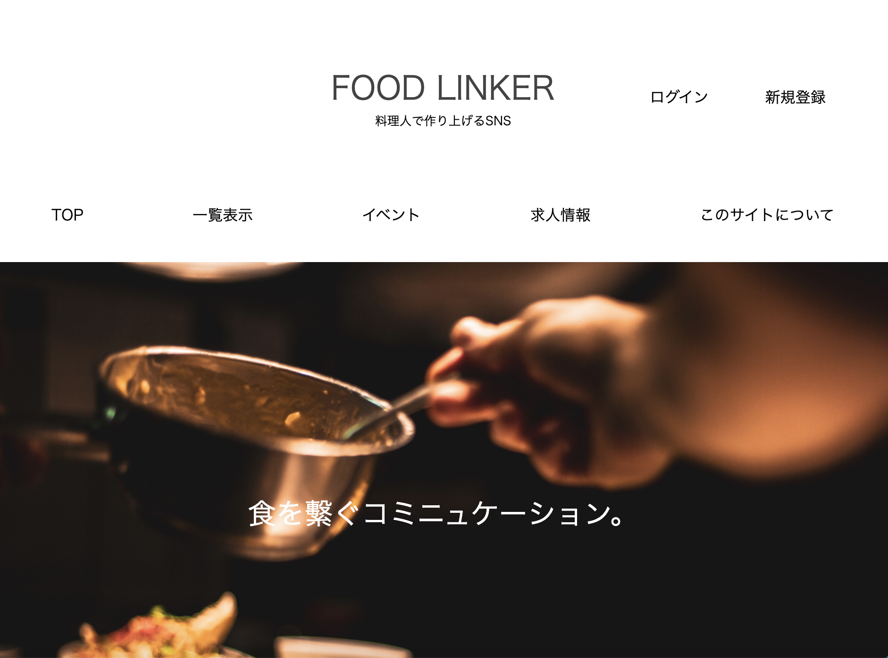
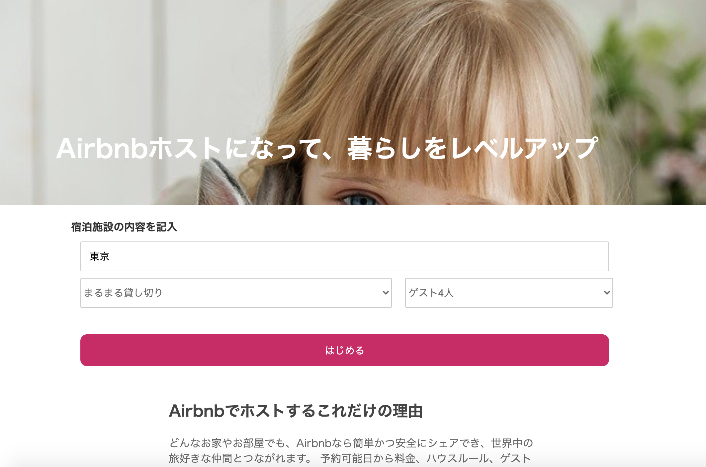
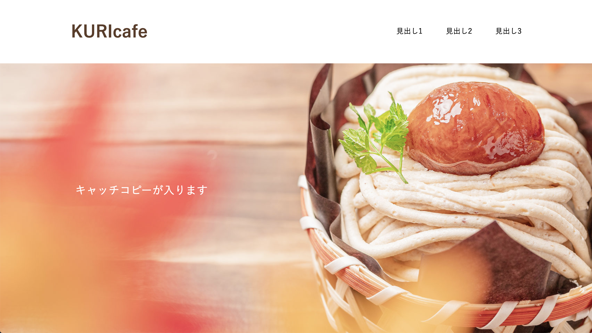
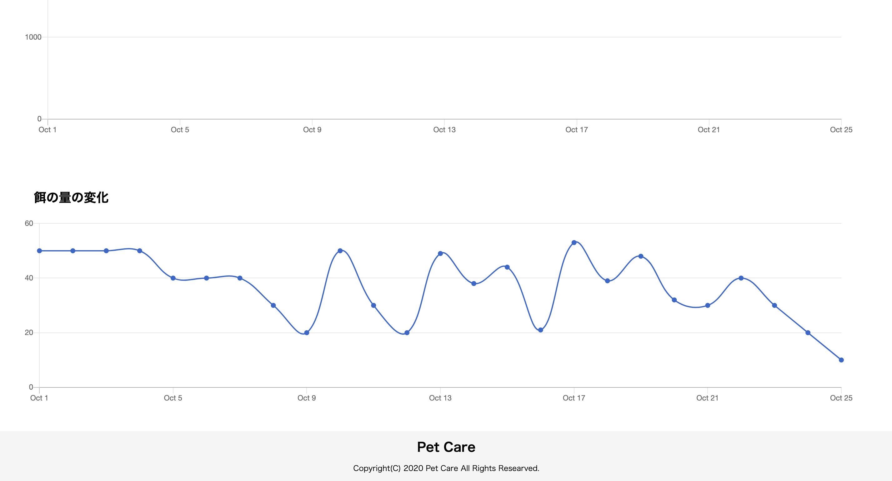
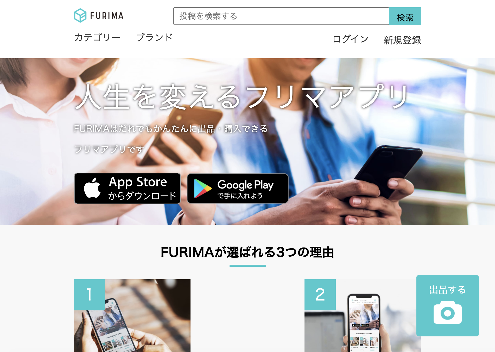

Tatsunori Suga
須賀辰則
Profile
これまでいろいろな形態の飲食業に携わってきました。 未経験からパティシエになり経験を積み、さらにレストランで働いていた時に料理にも興味を持ち勉強して、銀座のイタリアンの料理長になったという経験もあります。 料理長もそうですが、パティスリーで働いていた時も店舗を任されたり、カフェでは店長を任されたりと、そういったポジションを任せていただく事が多かったので、 マネジメントや管理、人の教育にも関わる機会が多かったという経験があります。 これらの経験から 「挑戦すること」「学ぶこと」「コミュニケーションすること」という自分の強みをIT業界にも生かしていきたいと考えております。 ITの世界に身を置きプログラミングを勉強し、世の中に意義のあるものを作り上げ発信できたらと思っています。 人の思いが中心にあってこそのITだと思います。 その思いを大切にできるそんなエンジニアになっていければと思います。
Skill
学んだ技術
HTML・CSS・SCSS・Ruby・Ruby on Rails・JavaScript・SQL・AWS・Heroku・Ajax・Git・GitHub等の技術を用いたアプリケーション開発
学習予定の技術
jQuery・Photoshop・AWS(EC2・RDS for MySQL・Route53・ALB・ACM)・・・
Product

- 【名前】
Food-Linker 料理人で作るSNS
- 【使用技術】
HTML / CSS / SCSS / JavaScript / ruby 2.6.5 / rails 6.0.0 / MySQL2 / AWS S3 / Git / GitHub / Rspec テストコード（単体/結合）/- 【制作時間】
10日（90時間）- 【機能一覧】
ユーザー管理機能 投稿機能（料理・イベント・求人） 一覧機能 詳細機能 編集機能 削除機能 コメント機能 お問い合わせ機能 検索機能- 【説明】GitHubリンク
ログイン機能を料理人視点と一般のユーザー視点の２つの視点から使えるようにしました。 料理人でログインすると料理の投稿、求人投稿、イベント投稿ができます。 一般ユーザーでログインすると料理に対してのコメントのみできる仕様になっています。 一番解決したいと思った課題は一般ユーザー視点でのシンプルさです。 「できる事がコメントと観覧のみに絞る事」と「ボタンなどのわかりやすさ」を上げる事で利用のストレスを減らすことを考えました 。なぜそう思ったかというと、このアプリの１番の目的はイベントや求人情報を利用して繋がっていくこと、 つまりリンクしていくことなので情報に早くたどり着けられるように、そういう課題を１番にしました。 - 【使用技術】
- 【名前】
ポートフォリオ
- 【使用技術】
HTML / CSS / SCSS /- 【制作時間】
２日（13時間）- 【機能一覧】
それぞれのポートフォリオに遷移する GitHubページに遷移する レスポンシブ対応- 【説明】GitHubリンク
見やすくシンプルに作成しました。成果物のイメージからそれぞれ別タグでサイトに遷移できるようになっています。 また、「GitHubリンク」からも別タグでGitHubページに遷移できます。 また、ContactのTwitterの「B0elena」から私のアカウントに別タグで遷移できます。 - 【使用技術】


- 【名前】
模写
- 【使用技術】
HTML / CSS / SCSS /- 【制作時間】
2日（15時間）- 【機能一覧】
模写サイト レスポンシブ対応- 【説明】GitHubリンク
Airbnbのトップページの模写です。スマートフォン・タブレット・PCそれぞれのレスポンシブ対応してます。 - 【使用技術】
- 【名前】
Photoshopでの模写(2サイト)
- 【使用技術】
Photoshop- 【制作時間】
共に5時間- 【機能一覧】
模写- 【説明】画像はこちら
Photoshopでの模写を通して、デザインカンプの作り方や画像の加工、バナーの作成、ツールの使い方や理解を深めると同時に、 例えば、サイト制作の経緯や内容、ターゲット、そのページが持つイメージなどを考えることができました。 - 【使用技術】

- 【名前】
デザインカンプからのコーディング
- 【使用技術】
HTML / CSS / SCSS /- 【制作時間】
4時間- 【機能一覧】
レスポンシブ対応- 【説明】GitHubリンク
PSDデータからのコーディングです。 - 【使用技術】

- 【名前】
Pet Care (ペット管理アプリ)
- 【使用技術】
HTML / CSS / SCSS / ruby 2.6.5 / rails 6.0.0 / MySQL2 / AWS S3 / chartkick / groupdate / Git / GitHub /- 【制作時間】
3日（20時間）- 【機能一覧】
ユーザー管理機能 ペット登録機能 体重などの記録 記録のグラフ化- 【説明】GitHubリンク
ペットの管理アプリ。飼っているペットの変化をグラフにより気づくために開発。 体重や食べたご飯の量をグラフで可視化する事により少しの変化も見逃さずにできる。 病院やペットショップの情報も記載 - 【使用技術】

- 【名前】
Furima フリマアプリ
- 【使用技術】
HTML / CSS / SCSS / JavaScript / ruby 2.6.5 / rails 6.0.0 / MySQL2 / AWS (S3 EC2) / Capistrano / unicorn / Nginx / Git / GitHub / Rspec テストコード（単体）/- 【制作時間】
17日（150時間）- 【機能一覧】
ログイン機能 投稿機能 一覧機能 詳細機能 編集機能 削除機能 コメント機能(非同期通信) 検索機能- 【説明】GitHubリンク
フリマのクローンサイトです。テックキャンプの最終課題にて作成したアプリケーション。 ユーザー登録ができ、商品を出品する事ができる。そしてそれを購入する事ができる。ベーシック認証 ID:admin Pass:2323 - 【使用技術】